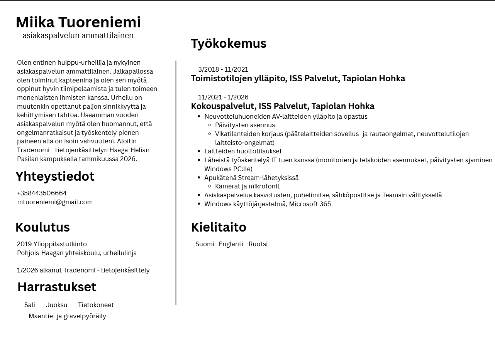

Hei, olen ensimmäisen vuoden tradenomiopiskelija, joka suuntautuu ohjelmistokehitykseen. Aikaisempaa työkokemusta minulta löytyy kokous- ja asiakaspalvelutehtävistä sekä teknisestä tuesta ISS Palveluilla, missä olen hoitanut asiakaskohtaamisia kasvotusten, puhelimitse ja digikanavissa, koordinoinut palveluita ja ratkaissut asiakkaiden ongelmatilanteita yhteistyössä eri tiimien kanssa. Vahvuuksiani ovat oma-aloitteinen ja järjestelmällinen työote, paineensietokyky sekä kyky omaksua uusia järjestelmiä nopeasti. Entinen huippu-urheilutaustani näkyy tavoitteellisuutena, vastuullisuutena ja jatkuvana haluna kehittyä, ja työskentelen sujuvasti suomeksi ja englanniksi.
Miika Tuoreniemi
Ohjelmistokehittäjä

CV

Hakemuskirje
Hakemuskirje content will go here. This is where you can put your application letter.
Projektit
Projektit content will go here. Showcase your projects here.